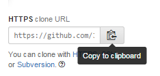

Perfekt!
Nu har du ett repository på GitHub och nu vill du ha det på din dator så du kan börja jobba.
För att ladda ned repot till din dator måste du "klona" det.
Öppna ett ny fönster av GitShell.
Skriv nu in: git clone http://github.com/[ditt användarnamn]/[namnet på ditt repo]
Du kan även kopiera länken direkt från GitHub:
Gå in i ditt repo på GitHub och klicka på följande knapp:

Sedan kan du gå tillbaka till GitShell och klistra in det: git clone [klistra in]
Om du skulle få error så är det bara klicka på pilen uppåt och försöka igen
...
Snyggt!
Nu har du ditt repo på din dator och kan börja arbeta.
För att komma in i ditt repo och utföra olika kommands måste du först skriva: cd [repo/mapp]
cd står för "Change Directory" och är ett linux-command. Om du har gjort rätt så ser din rad ut såhär i GitShell:
Gå nu in i det andra fönstret av GitShell och checka ut nästa version av detta repo!